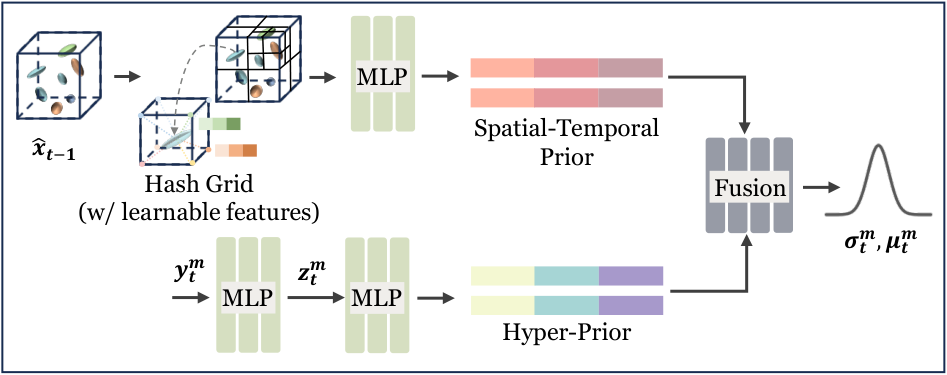

D-FCGS：自由视点动态高斯分布的前馈压缩
简单摘要
自由视点视频（FVV）能够提供沉浸式6自由度体验，但实现实用FVV系统需要在重建、压缩、传输和渲染各方面都有高效方案。该工作聚焦于动态3D场景压缩。3DGS的最新进展为3D场景表示带来了革命性变化，提供无与伦比的渲染质量和实时性能。将其扩展到4D，逐帧3D高斯自然可以作为3DGS的时间扩展，构成FVV的基础。然而现有方法受限于重建与压缩的耦合优化——通过专门格式（如神经网络）表示逐帧高斯运动，需要逐场景优化和精细的超参数调优。这种依赖优化的范式造成两个关键障碍：严重限制了对未见场景的泛化能力，阻碍了能够广泛部署FVV的标准化压缩方案的发展。D-FCGS提出了一个前馈压缩框架，核心洞察是高斯点云的时间相干性可通过帧组（GoF）表示高效建模，其中帧间运动能以场景无关的前馈方式进行压缩。

核心创新
(1) 首个动态高斯泼溅的前馈压缩框架D-FCGS，无需逐场景优化即可实现场景无关的帧间压缩；(2) 帧组（GoF）表示：利用稀疏控制点高效提取运动张量，兼顾压缩效率和计算性能；(3) 双先验感知熵模型：为运动压缩量身定制，提升概率估计精度；(4) 端到端训练范式：在真实和合成多视图视频数据集构建的逐帧GS序列上训练，训练完成后作为通用帧间压缩编解码器使用；(5) 相较于3DGStream实现17倍压缩，同时保持可比的渲染保真度。
技术细节
我们的前馈压缩方法采用逐帧标准 3DGS 作为输入，表示为高斯帧，并且每个帧都根据各自时间戳的多视图图像进行预优化。在给定的高斯框架内，每个高斯原语的特征如下。在解码过程中，我们通过控制点引导的运动补偿和颜色细化进行重建，同时将其存储到缓冲区中以供将来参考。作者这样设计，是为了把这一节的输入、约束和输出关系讲清楚。
然后将获得的稀疏运动张量输入到我们的端到端压缩模块中。在解码器侧，使用算术解码 (AD) 将比特流解压缩回运动张量以进行帧重建。这一步的作用，是把当前结果继续传给后面的模块或训练目标。
3 初步的
我们的前馈压缩方法采用逐帧标准 3DGS 作为输入，表示为高斯帧，并且每个帧都根据各自时间戳的多视图图像进行预优化。在给定的高斯框架内，每个高斯原语的特征如下。作者这样设计，是为了把这一节的输入、约束和输出关系讲清楚。
$$ G(\boldsymbol{x}) = e^{-\frac{1}{2}(\boldsymbol{x} - \boldsymbol{\mu})^T \boldsymbol{\Sigma}^{-1} (\boldsymbol{x} - \boldsymbol{\mu})}, $$
这条式子是在定义一个可直接计算的中间量：右侧把相对位置、方向、权重或比例关系组合起来，左侧则把这个组合结果记成后续模块要反复使用的变量。
$$ C = \sum_i c_i \alpha_i \prod_{j=1}^{i-1} (1-\alpha_j), $$
放在“初步的”这一部分看，它重点在定义或约束 C 这一项。这条式子描述了多个分量的聚合或逐步合成过程。它通常表示模型如何把局部贡献、概率权重或多项损失累积成最终结果。
$$ L_{\text{render}} = \lambda L_{\text{D-SSIM}} + (1-\lambda) L_1. $$
放在“初步的”这一部分看，它重点在定义或约束 L render 这一项。这条式子是在定义一个可直接计算的中间量：右侧把相对位置、方向、权重或比例关系组合起来，左侧则把这个组合结果记成后续模块要反复使用的变量。
4 方法
在解码过程中，我们通过控制点引导的运动补偿和颜色细化进行重建，同时将其存储到缓冲区中以供将来参考。然后将获得的稀疏运动张量输入到我们的端到端压缩模块中。在解码器侧，使用算术解码 (AD) 将比特流解压缩回运动张量以进行帧重建。作者这样设计，是为了把这一节的输入、约束和输出关系讲清楚。
其中 和 分别是量化潜在代码的估计概率质量函数（PMF）和真实概率质量函数（PMF）。由于算术编码可以实现接近此界限的比特率，因此我们的目标是设计一个准确估计的熵模型。显示了所提出的双先验熵模型，该模型结合了超先验和时空上下文先验，以进行精确的分布估计。
4.1 概述
如图所示，我们的 D-FCGS 框架包含三个关键组件。(1) 稀疏运动提取 ( )，(2) 前馈运动压缩 ( ) 和 (3) 运动补偿和细化 ( )。在解码过程中，我们通过控制点引导的运动补偿和颜色细化进行重建，同时将其存储到缓冲区中以供将来参考。
4.2 通过控制点进行稀疏运动提取
围绕 4.2 通过控制点进行稀疏运动提取，基于大多数高斯模型表现出局部运动相干性的观察，我们提出了一种有效的稀疏表示。该过程有效地降低了存储需求和处理成本，同时保留了运动特征。作者这样设计，是为了把这一节的输入、约束和输出关系讲清楚。
$$ \boldsymbol{\mu^c} = FPS(\{\mu_i\}_{i\in N}, \frac{N}{M}), $$
这条式子是在从整组高斯中心里挑出更少但更有代表性的控制点。作者用最远点采样先保住空间覆盖范围，再把后续运动建模压缩到这些关键点上，从而减少需要编码和传输的自由度。
$$ \boldsymbol{x^{c}} = Index(\boldsymbol{x}, \boldsymbol{\mu^c}), $$
这条式子是在按前面选出的控制点索引，从原始高斯集合里取出对应的位置或属性子集。这样后面的压缩网络就不必处理整帧所有高斯，而是只围绕代表性控制点建模。
$$ \boldsymbol{y^c_{t}} = MLP(FreqEnc\{\boldsymbol{x^c_t}\}), $$
这条式子先把控制点坐标做频率编码，再送入 MLP 映射成紧凑的隐特征。这样做的作用，是把原始几何位置转换成更适合压缩网络建模的时空表示。
$$ \boldsymbol{\hat{y}^c_{t-1}} = MLP(FreqEnc\{\boldsymbol{\hat{x}^c_{t-1}}\}). $$
这条式子把前面若干观测、条件或中间特征，经过一个显式模块映射成新的状态变量。它的意义在于把复杂流程压缩成清晰的函数接口，方便后续模块继续消费这个中间结果。
$$ \boldsymbol{m^c_{t}} = Converter (\boldsymbol{y^c_{t}} - \boldsymbol{\hat{y}^c_{t-1})}, $$
这条式子把当前控制点特征与参考特征之间的差异，转换成可编码的运动残差表示。它对应的核心思想是：真正需要压缩的不是绝对状态，而是相邻帧之间的变化量。
4.3 前馈运动压缩
然后将获得的稀疏运动张量输入到我们的端到端压缩模块中。该过程从数据编码开始，然后是由加性均匀噪声模拟的可微分量化，以实现梯度反向传播。在解码器侧，使用算术解码 (AD) 将比特流解压缩回运动张量以进行帧重建。作者这样设计，是为了把这一节的输入、约束和输出关系讲清楚。
每个量化潜在值的概率质量是通过在量化仓上积分 PMF 来计算的。其中对应于某个控制点的索引。速率损失结合了运动分布和超潜在分布的贡献。

$$ \begin{aligned} \boldsymbol{\hat{y}^m_t} =Q(\boldsymbol{y^m_t}) & = \boldsymbol{y^m_t} + \mathcal{U}(-\frac{q'}{2}, \frac{q'}{2}), \text{ for training} \\ & = Round(\frac{\boldsymbol{y^m_t}}{q'}) \cdot q', \text{ for testing} \\ \end{aligned} $$
放在“方法”这一部分看，它重点在定义或约束 y m t 这一项。这条式子把前面若干观测、条件或中间特征，经过一个显式模块映射成新的状态变量。它的意义在于把复杂流程压缩成清晰的函数接口，方便后续模块继续消费这个中间结果。
$$ R(\boldsymbol{\hat{y}^m_t}) \ge \mathbb{E}_{\boldsymbol{\hat{y}^m_t} \sim q_{\boldsymbol{\hat{y}^m_t}}}[-\log _2p_{\boldsymbol{\hat{y}^m_t}}(\boldsymbol{\hat{y}^m_t})], $$
放在“方法”这一部分看，这条式子重点不是孤立地罗列符号，而是交代 m_t 如何承接前面的输入并把结果交给后续步骤。
4.4 运动补偿和细化
围绕 4.4 运动补偿和细化，解码后的控制点运动以距离感知补偿方式传播到整个高斯集。最终通过加法应用聚合的运动矢量来调整参考帧的几何参数。来自熵模型模块的时空先验被重新用于预测颜色残差，这些残差在解码过程中动态添加，无需额外存储。作者这样设计，是为了把这一节的输入、约束和输出关系讲清楚。
4.5 D-FCGS 的训练和推理管道
围绕 4.5 D-FCGS 的训练和推理管道，遵循既定实践，我们采用框架组（GoF）范例，其结构如下。在解码过程中，系统首先重建 ，然后将其与时空先验相结合来估计解码的分布参数 ( , )。作者这样设计，是为了把这一节的输入、约束和输出关系讲清楚。
实验结论
## 实验设置
**数据集。** 从六个多视图视频数据集推导时序高斯帧：(1) N3V，(2) MeetRoom，(3) WideRange4D，(4) Google Immersive，(5) Self-Cap，(6) VRU。训练使用MeetRoom的3个场景和WideRange4D的28个场景；域内测试使用MeetRoom的discussion场景，域外测试使用N3V的6个场景。额外在多样化和高动态场景上执行鲁棒性测试。全部实验在NVIDIA RTX 4090 GPU上进行。关键超参数：降采样因子=70，KNN邻域大小=30，量化步长=1，λ=1e-3。
**评估指标。** 三类指标：(1) PSNR和SSIM评估重建质量；(2) 压缩大小（MB/帧）评估码率效率；(3) 渲染速度（FPS）及编解码时间（秒）评估计算性能。
**基线方法。** 对比方法涵盖两类基于优化的动态场景重建：基于NeRF的技术（K-Planes、HyperReel、NeRFPlayer、StreamRF、ReRF、TeTriRF）和逐帧高斯方法（D-3DG、3DGStream、HiCoM、QUEEN、4DGC）。
## 压缩性能
D-FCGS在N3V和MeetRoom上分别实现了每帧0.46MB和0.38MB的平均压缩大小，相较3DGStream的7.75MB和7.66MB实现了17倍压缩。P帧压缩比在大多数情况下超过32倍。整个编解码流水线在1秒内完成。可视化定性对比显示D-FCGS在N3V和MeetRoom上达到与3DGStream可比甚至更优的保真度。
**跨数据集泛化。** 在Google Immersive、Self-Cap和VRU数据集上评估。D-FCGS在Google Immersive和Self-Cap上实现了前所未有的P帧压缩，同时保持几乎相同的SSIM和微小PSNR降幅（约0.5dB）。VRU数据集含大量模糊运动，PSNR差距较大，但D-FCGS以可接受的视觉保真度牺牲换取了显著的比特率改善。
## 参数鲁棒性
在cut beef场景(N3V)上测试不同参数配置（KNN邻域大小、降采样因子、GoF大小），D-FCGS在大多数参数组合下保持稳定的渲染质量，展现了强参数鲁棒性。增大降采样因子有效减少控制点数量，导致P帧压缩大小线性降低。
## 消融实验
**稀疏运动表示。** 基于控制点的稀疏运动表示是高效压缩流水线的基础。移除控制点并预测所有高斯运动显著增加存储量并使编解码速度减慢3.2倍。**双先验熵模型。** 超先验有效捕获全局依赖，而基于哈希网格的时空先验是核心创新——建模局部相关性。移除时空先验分支导致明显的率失真性能退化。**在线颜色细化。** 颜色细化模块将渲染PSNR提升0.1-0.5dB，无需额外存储和几乎可忽略的解码开销。
## 结论
D-FCGS是首个面向动态高斯序列的前馈零样本压缩框架。采用I-P编码剖面并引入基于控制点的稀疏帧间运动提取；提出端到端运动压缩框架及双先验感知熵模型；控制点引导的运动补偿与颜色细化网络相结合。在两个基准数据集上实现超过17倍的压缩效率，并在多个数据集的多样场景上展现了显著鲁棒性。
理解评价
如果把这篇论文放回问题背景里看，它真正的价值在于：自由视点视频 (FVV) 可实现身临其境的 3D 体验，但动态 3D 表示的高效压缩仍然是一个重大挑战。这说明作者不是只补一个局部模块，而是在重新组织问题该怎样被解决。
最能支撑这个判断的，还是实验给出的证据：现有的动态 3D 高斯分布方法将重建与优化相关的压缩和定制运动格式结合起来，限制了泛化和标准化。换句话说，这些设计并不只是概念上更完整，而是实实在在改变了最终结果。
当然，它离真正成熟的方案还有距离：当前方案的局限在于它仍然受制于计算资源、输入质量或场景复杂度，距离真正稳健的大规模部署还有差距。后续更值得继续推进的方向，是 其次，我们提出了一个具有双先验熵模型的端到端运动压缩框架，充分利用超先验和时空上下文来改进速率估计。